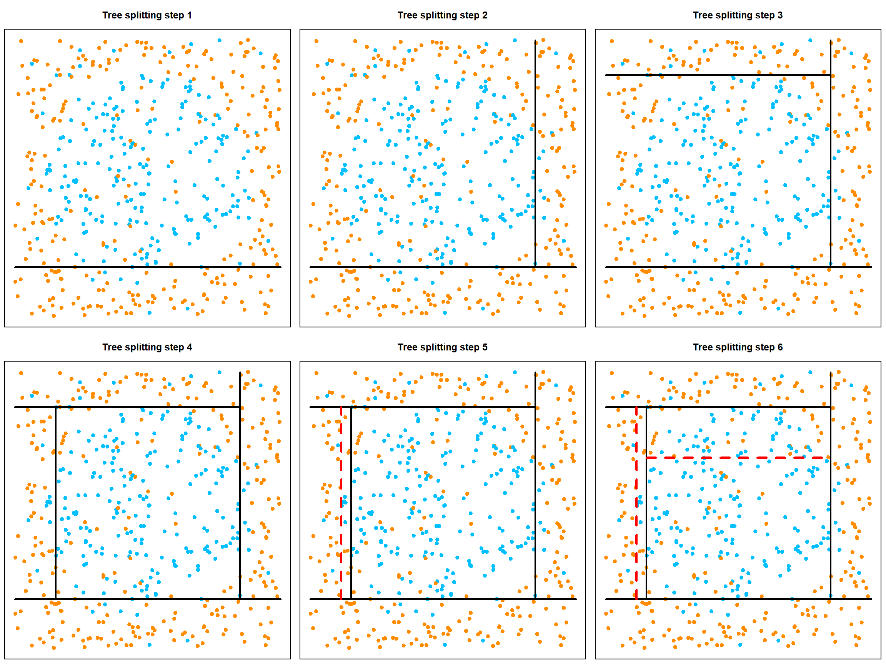
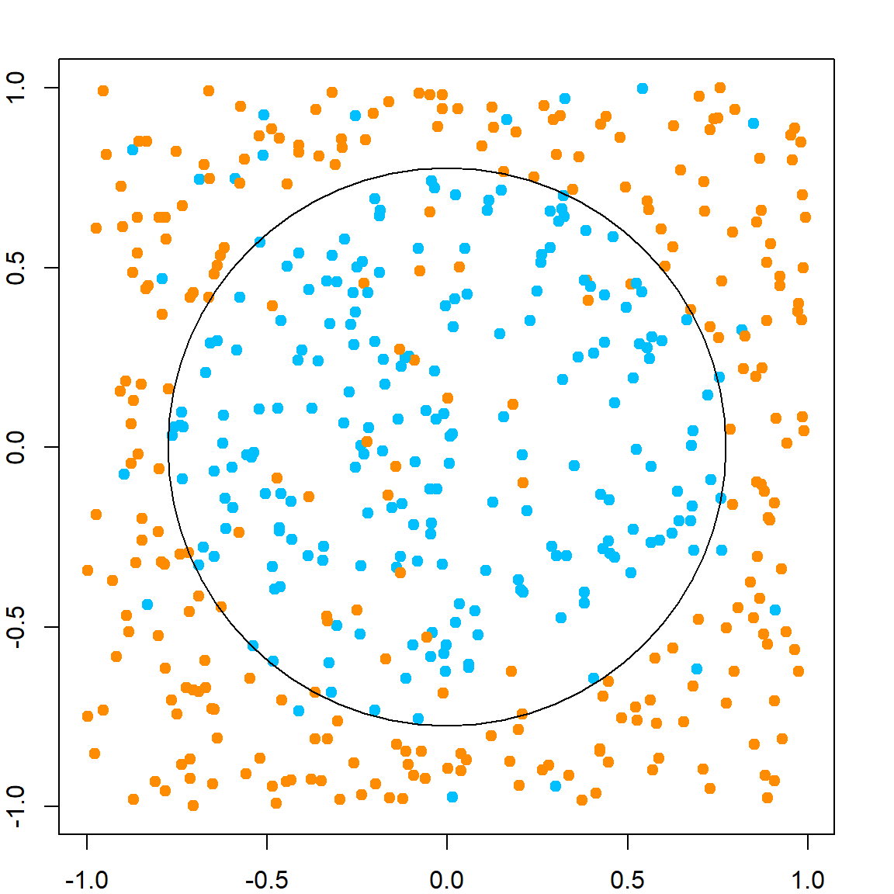

Chapter 18 Random Forests
Roughly speaking, random forests (Breiman 2001) are parallelly fitted CART models with some randomness. There are several main components:
- Bootstrapping of data for each tree using the Bagging idea (Breiman 1996), and use the averaged result (for regression) or majority voting (for classification) of all trees as the prediction.
- At each internal node, we may not consider all variables. Instead, we consider a randomly selected
mtryvariables to search for the best split. This idea was inspired by Ho (1998). - For each tree, we will not perform pruning. Instead, we simply stop when the internal node contains no more than
nodesizenumber of observations.
Later on, there were various version of random forests that attempts to improve the performance, from both computational and theoretical prospective. We will introduce them later.
18.1 Bagging Predictors
CART models may be difficult when dealing with non-axis-aligned decision boundaries. This can be seen from the example below, in a two-dimensional case. The idea of Bagging is that we can fit many CART models, each from a Bootstrap sample, i.e., sample with replacement from the original \(n\) observations. The reason that Breiman considered bootstrap samples is because it can approximate the original distribution that generates the data. But the end result is that since each tree may be slightly different from each other, when we stack them, the decision bound can be more “smooth”.
# generate some data
set.seed(2)
n = 1000
x1 = runif(n, -1, 1)
x2 = runif(n, -1, 1)
y = rbinom(n, size = 1, prob = ifelse((x1 + x2 > -0.5) & (x1 + x2 < 0.5) , 0.8, 0.2))
xgrid = expand.grid(x1 = seq(-1, 1, 0.01), x2 = seq(-1, 1, 0.01))Let’s compare the decision rule of CART and Bagging. For CART, the decision line has to be aligned to axis. For Bagging, we use a total of 200 trees, specified by nbagg in the ipred package.
# fit CART
library(rpart)
rpart.fit = rpart(as.factor(y)~x1+x2, data = data.frame(x1, x2, y))
# we could fit a different tree using a bootstrap sample
# rpart.fit = rpart(as.factor(y)~x1+x2, data = data.frame(x1, x2, y)[sample(1:n, n, replace = TRUE), ])
pred = matrix(predict(rpart.fit, xgrid, type = "class") == 1, 201, 201)
contour(seq(-1, 1, 0.01), seq(-1, 1, 0.01), pred, levels=0.5, labels="",axes=FALSE)
points(x1, x2, col = ifelse(y == 1, "deepskyblue", "darkorange"), pch = 19, yaxt="n", xaxt = "n")
points(xgrid, pch=".", cex=1.2, col=ifelse(pred, "deepskyblue", "darkorange"))
box()
title("CART")
# fit Bagging
library(ipred)
bag.fit = bagging(as.factor(y)~x1+x2, data = data.frame(x1, x2, y), nbagg = 200, ns = 400)
pred = matrix(predict(prune(bag.fit), xgrid) == 1, 201, 201)
contour(seq(-1, 1, 0.01), seq(-1, 1, 0.01), pred, levels=0.5, labels="",axes=FALSE)
points(x1, x2, col = ifelse(y == 1, "deepskyblue", "darkorange"), pch = 19, yaxt="n", xaxt = "n")
points(xgrid, pch=".", cex=1.2, col=ifelse(pred, "deepskyblue", "darkorange"))
box()
title("Bagging")
18.2 Random Forests
Random forests are equipped with this bootstrapping strategy, but also with other randomness and mechanism. A Random forest can be controlled by several key parameters:
ntree: Number of trees, many controls the stability. We typically want to fit a large number of trees.sampsize: How many samples to use when fitting each tree. In practice, we often use the training sample size if sampled with replacement.mtry: Number of randomly sampled variable to consider at each internal node. This need to be tuned for adaptiveness to sparse signal (largemtry) or highly correlated features (smallmtry).nodesize: Stop splitting when the node sample size is no larger thannodesize. This works similar to \(k\) in a KNN model. However, its effect can be greatly affected by other tuning parameters.
Using the randomForest package, we can fit the model. It is difficult to visualize this when p > 2. But we can look at the testing error.
# generate some data with larger p
set.seed(2)
n = 1000
p = 10
X = matrix(runif(n*p, -1, 1), n, p)
x1 = X[, 1]
x2 = X[, 2]
y = rbinom(n, size = 1, prob = ifelse((x1 + x2 > -0.5) & (x1 + x2 < 0.5), 0.8, 0.2))
xgrid = expand.grid(x1 = seq(-1, 1, 0.01), x2 = seq(-1, 1, 0.01))
# fit random forests with a selected tuning
library(randomForest)
## randomForest 4.7-1.1
## Type rfNews() to see new features/changes/bug fixes.
##
## Attaching package: 'randomForest'
## The following object is masked from 'package:ggplot2':
##
## margin
rf.fit = randomForest(X, as.factor(y), ntree = 1000,
mtry = 7, nodesize = 10, sampsize = 800)Instead of generating a set of testing samples labels, let’s directly compare with the “true” decision rule, the Bayes rule.
18.3 Kernel view of Random Forests
For this part, we need to install a new package RLT. This is a package in development. But you can install the current version from GitHub (ver \(\geq\) 4.2.6). Please note that the current CRAN version (ver. 3.2.5) does not work for this part. Use the following code to install the package. If you are using MacOS, then you need to follow this guild to install the package for OpenMP.
Similar to a tree model, random forest can also be viewed as kernel estimator. Essentially its a stacking of kernels induced from all trees. The idea has been illustrated in Scornet (2016). However, since random forest is a random algorithm, each tree can be slightly different from each other. To incorporate this, denote the randomness of a tree estimator by \(\eta\), which can affect how the tree is constructed. Suppose we fit \(B\) trees in a random forest, with each tree denoted as \({\cal T_b}\), then a random forest estimator can be expressed as
\[ \hat{f}(x) = \frac{1}{B} \sum_{b = 1}^B \frac{\sum_i K_{\cal T_b}(x, x_i; \eta_b) y_i}{ \sum_i K_{\cal T_b}(x, x_i; \eta_b) }. \]
Note that in this expression, the denominators in each tree estimator are different since we may randomly end-up with some sample size smaller than the nodesize after a split. However, we can still think each terminal nodes as having roughly the same size. Hence, we could also consider an alternative kernel induced from random forest, which aligns with traditional kernel estimators.
\[ \hat{f}(x) = \frac{ \sum_i y_i \sum_{b = 1}^B K_{\cal T_b}(x, x_i) }{ \sum_i \sum_{b = 1}^B K_{\cal T_b}(x, x_i) }. \]
In this case, the kernel function is
\[ K_\text{RF}(x, x_i) = \sum_{b = 1}^B K_{\cal T_b}(x, x_i), \]
which counts how many times \(x\) falls into the same terminal node as observation \(x_i\). Hence, this kernel representation can be incorporated into many machine learning algorithms. For example, if we are interested in a supervised clustering setting, we can first fit a random forest model and perform spectral clustering using the induced kernel matrix. We can also use the kernel ridge regression with the kernel induced. Let’s generate a new dataset with 5 continuous variables. The true model depends on just the first two variables.
If we fit just one tree, there could be different variations based on the randomness. Please note that the name of these parameters can be different in the RLT package.
library(RLT)
## RLT and Random Forests v4.2.6
## pre-release at github.com/teazrq/RLT
par(mfrow=c(2, 3))
for (i in 1:6)
{
# fit a model with one tree
RLTfit <- RLT(X, y, ntrees = 1, nmin = 30, mtry = 5,
split.gen = "best", resample.prob = 1,
resample.replace = TRUE,
param.control = list("resample.track" = TRUE))
# target point 1
newX = matrix(c(0.25, 0.75, 0.5, 0.5, 0.5),
1, 5)
KernelW = forest.kernel(RLTfit, X1 = newX, X2 = X, vs.train = TRUE)$Kernel
par(mar = c(2, 2, 2, 2))
plot(X[, 1], X[, 2], col = "deepskyblue", pch = 19, cex = 0.5)
points(X[, 1], X[, 2], col = "darkorange", pch = 19, cex = KernelW>0, lwd = 2)
points(newX[1], newX[2], col = "black", pch = 4, cex = 3, lwd = 5)
}
If we stack all of them, we obtain a random forest kernel.
RLTfit <- RLT(X, y, ntrees = 1000, nmin = 10, mtry = 5,
split.gen = "best", resample.prob = 1,
resample.replace = TRUE,
param.control = list("resample.track" = TRUE))
par(mfrow=c(1, 2))
# target point 1
newX = matrix(c(0.25, 0.75, 0.5, 0.5, 0.5),
1, 5)
KernelW = forest.kernel(RLTfit, X1 = newX, X2 = X, vs.train = TRUE)$Kernel
par(mar = c(2, 2, 2, 2))
plot(X[, 1], X[, 2], col = "deepskyblue", pch = 19, cex = 0.5)
points(X[, 1], X[, 2], col = "darkorange", cex = 10*KernelW/1000, lwd = 2)
points(newX[1], newX[2], col = "black", pch = 4, cex = 4, lwd = 5)
legend("bottomright", "Target Point", pch = 4, col = "black",
lwd = 5, lty = NA, cex = 1.5)
# target point 2
newX = matrix(c(0.5, 0.3, 0.5, 0.5, 0.5),
1, 5)
KernelW = forest.kernel(RLTfit, X1 = newX, X2 = X, vs.train = TRUE)$Kernel
par(mar = c(2, 2, 2, 2))
plot(X[, 1], X[, 2], col = "deepskyblue", pch = 19, cex = 0.5)
points(X[, 1], X[, 2], col = "darkorange", cex = 10*KernelW/1000, lwd = 2)
points(newX[1], newX[2], col = "black", pch = 4, cex = 4, lwd = 5)
legend("bottomright", "Target Point", pch = 4, col = "black",
lwd = 5, lty = NA, cex = 1.5)18.4 Variable Importance
The idea of variable importance is to identify which features (or variables) are most influential in predicting the outcome based on the fitted model. Variable importance is typically assessed through techniques like mean decrease accuracy, which measures the decrease in model accuracy when a variable’s values are permuted across the out-of-bag samples, thereby disrupting the relationship between that variable and the target. Alternatively, it can also be measured using the mean decrease impurity, which calculates the total reduction in the criterion (Gini impurity, entropy, or mean squared error) that each variable provides when used in trees, averaged over all trees in the forest. The calculation can be summarized by the following steps:
- Train the Random Forest: Fit a random forest model to your data using all available variables.
- Out-of-Bag Evaluation: For each tree in the forest, predict the outcome for the out-of-bag (OOB) samples—these are the samples not used in the construction of that particular tree. Compute the OOB accuracy (or another relevant metric like AUC for classification, MSE for regression) for these predictions.
- Permute Variable & Re-evaluate: For each variable of interest, randomly permute its values among the OOB samples. Then, use the same tree to make predictions on these “shuffled” data and compute the accuracy (or other metrics) again.
- Calculate Decrease in Accuracy: Compare the accuracy obtained from the permuted data to the original OOB accuracy for each tree. The difference is a measure of the importance of the variable for that specific tree.
- Average Over All Trees: Aggregate these importance measures across all trees in the forest to get a single importance score for each variable.
18.5 Adaptiveness of Random Forest Kernel
However, random forest can adapt pretty well in a high-dimensional, especially sparse setting. This is because of the greedy splitting rule selection. The adaptiveness works in a way that, it tends to ignore covariates that are not effective on explaining the variation of \(Y\). Hence, making the model similar to a kernel method on a low-dimensional space. The following example illustrate this effect in a two-dimensional case. We can see that the outcome is only related to the first dimension. Hence, when setting mtry = 2, we will almost always prefer to split on the first variable, making its neighbors very close to the target prediction point \((0, 0)^T\).
# generate some data
set.seed(2)
n = 400
x1 = runif(n, -1, 1)
x2 = runif(n, -1, 1)
y = 2*x1 + 0.2*rnorm(n)
xgrid = expand.grid(x1 = seq(-1, 1, 0.01), x2 = seq(-1, 1, 0.01))
# fit forest
rf.fit = RLT(x = data.frame(x1, x2), y = y, model = "regression",
mtry = 2, nmin = 40, param.control = list(resample.track = TRUE))
# calculate kernel
rf.kernel = forest.kernel(rf.fit, X1 = data.frame("x1" = 0, "x2" = 0),
X2 = data.frame(x1, x2), vs.train = TRUE)$Kernel
# kernel weights
plot(x1, x2, pch = 19, yaxt="n", xaxt = "n", cex = (rf.kernel + 1)^0.15 - 0.7)
points(0, 0, col = "red", pch = 18, cex = 3)
The tuning parameter mtry has a very strong effect on controlling this greediness. When mtry is large, we will be very greedy on selecting the true signal variable to split. In a high-dimensional setting, we may only use a few variables before reaching a terminal node, making the model only rely a few dimensions. When we use a very small mtry, the model behaves similarly to a regular kernel estimator with good smoothing (small variance) property. However, since it is effectively randomly selecting a dimension to split, the bandwidth on each dimension would also be similar but large since we can only afford a few splits before the node size becomes too small. This can be seen from the following example, with mtry = 1.
# fit forest
rf.fit = RLT(x = data.frame(x1, x2), y = y, model = "regression",
mtry = 1, nmin = 40, param.control = list(resample.track = TRUE))
# calculate kernel
rf.kernel = forest.kernel(rf.fit, X1 = data.frame("x1" = 0, "x2" = 0),
X2 = data.frame(x1, x2), vs.train = TRUE)$Kernel
# kernel weights
plot(x1, x2, pch = 19, yaxt="n", xaxt = "n", cex = (rf.kernel + 1)^0.15 - 0.7)
points(0, 0, col = "red", pch = 18, cex = 3)